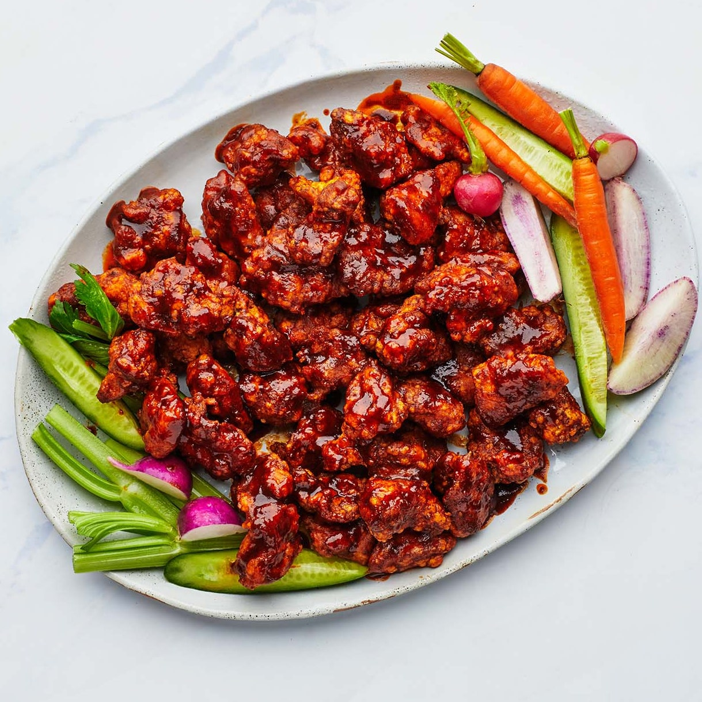

Harissa-Honey Popcorn Chicken

Saucy and glossy with a crispy-gone-slightly-soggy bite, this glazed popcorn chicken is a great excuse to start watching sports.
First, the chicken is marinated overnight in a buttermilk mixture that’s supercharged with finely chopped preserved lemon. Then it’s dredged in a mixture of rice flour and cornstarch, which results in a shatteringly crisp exterior that stays audibly crunchy for hours. You could substitute all-purpose flour for rice flour if needed, but it won’t be as crunchy—or gluten-free. Finally, the chicken is tossed in a sweet, spicy, and sticky harissa-honey sauce.
Ingredients
Chicken
- 1 preserved lemon
- 1 large egg
- 4 garlic cloves
- Zest of 1 lemon
- 1 cup buttermilk
- 1 cup cornstarch
- 1 tsp. salt
- 8 large skinless, B O N E L E S S chicken thighs
- 1.5 cups rice flour
- Vegtable oil (for frying)
Sauce
- 0.5 cup butter
- 3 Tbsp. honey
- 6 Tbsp. Harissa paste
- 2 Tbsp. fresh lemon juice
- 0.5 tsp. salt
Preparation
Chicken
- Place preserved lemon, seeds removed, on a cutting board and finely chop. Using the back of your knife, mash into a coarse paste and transfer to a large bowl. Add 1 large egg, 4 garlic cloves, finely grated, zest of 1 lemon, 1 cup buttermilk, 0.25 cup cornstarch, and 1 tsp. salt to bowl and whisk to combine. Add chicken thighs, cut into 1" pieces. Mix well to make sure each piece is coated in marinade; cover and chill at least 4 hours and up to 12 hours.
- Whisk 1.5 cups rice flour, remaining 0.75 cup cornstarch, and remaining 0.5 tsp. salt in a large shallow dish to combine. Remove one third of chicken from bowl, letting some of the marinade drip back into bowl, and arrange in a single layer on rice flour mixture. Gently toss chicken to coat, pressing down into mixture and turning to make sure every nook and cranny is covered. Transfer to a large plate. Repeat with remaining chicken in 2 batches.
- Pour vegetable oil into a large Dutch oven or other heavy pot to come 2" up the sides. Heat oil over medium-high until it registers 350°F. Working in 3–4 batches, fry chicken, turning occasionally, until cooked through and golden brown, 7–10 minutes. Using a spider or slotted spoon, transfer to a wire rack set inside a rimmed baking sheet and let drain.
Sauce
- While the chicken is frying, heat 0.5 cup butter and 3 Tbsp. honey in a small saucepan over medium until butter is melted.
- Scrape honey butter into a large bowl, add 6 Tbsp. harissa paste, 2 Tbsp. fresh lemon juice, and 0.5 tsp. salt, and whisk until smooth and emulsified. Taste sauce and season with more salt if needed.
- Place fried chicken in sauce and toss until every piece is well coated.